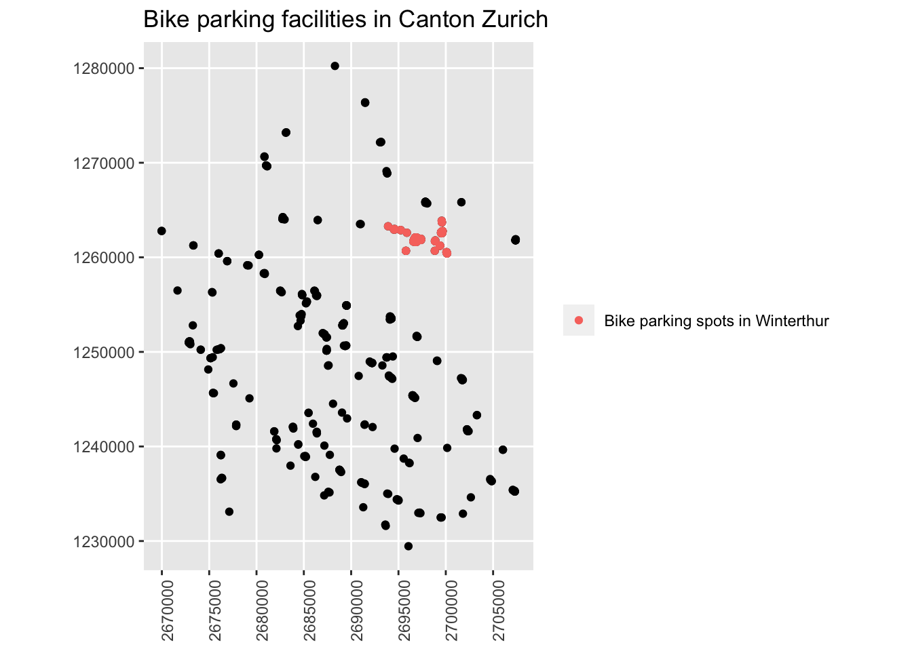

4 Basic spatial operations
4.1 Clip operation
Quite often in spatial analysis, we come across with cases, where we do not want to use all the available data there is. In other words, we want to focus on a specific area of interest, which dictates the need for clipping the existing dataset based on it’s relationship to some other existing spatial feature. In R this operation can be easily performed using the st_intersection function in sf.
Let’s assume in the example below that we want to clip the available dataset of all the train stations in Switzerland by focusing our analysis on four specific cantons.
# Point dataset depicting the train stations locations across Switzerland
bahn_haltestelle_ch <- st_read("sample_data/other/Haltestelle_Bahn_CH.shp")
## Reading layer `Haltestelle_Bahn_CH' from data source `/Users/runner/work/book/book/sample_data/other/Haltestelle_Bahn_CH.shp' using driver `ESRI Shapefile'
## Simple feature collection with 3134 features and 16 fields
## geometry type: POINT
## dimension: XYZ
## bbox: xmin: 2488908 ymin: 1076850 xmax: 2817389 ymax: 1289090
## z_range: zmin: 194.905 zmax: 3453.525
## projected CRS: CH1903+ / LV95
# Dataset depictinG Switzerland on canton level
kantonsgebiet <- st_read("sample_data/other/Kantonsgebiet.shp")
## Reading layer `Kantonsgebiet' from data source `/Users/runner/work/book/book/sample_data/other/Kantonsgebiet.shp' using driver `ESRI Shapefile'
## Simple feature collection with 56 features and 22 fields
## geometry type: MULTIPOLYGON
## dimension: XYZ
## bbox: xmin: 2485410 ymin: 1075268 xmax: 2833858 ymax: 1295934
## z_range: zmin: 193.51 zmax: 4613.729
## projected CRS: CH1903+ / LV95
tmap_mode(mode = c("plot")) # setting the plotting mode to static -- optimizing the process
tm_shape(kantonsgebiet) + tm_polygons("#f0f0f0") +
tm_shape(bahn_haltestelle_ch) + tm_dots(col = "#e34a33",size = 0.1, alpha = 0.5) +
tm_shape(kantonsgebiet) + tm_borders(col = "black") + tm_layout(frame = F)
As it was mentioned above, the aim is to analyse the situation at a particular area. So we are going to create an index with the specific cantons we are interested in.
index <- kantonsgebiet$name == "Zürich" |
kantonsgebiet$name == "St. Gallen" |
kantonsgebiet$name == "Thurgau" |
kantonsgebiet$name == "Aargau"
# Selecting the cantons based on the previously generated index
kantons_aOi <- kantonsgebiet[index,]
# Performing the clipping operation
hal_clipped <- st_intersection(kantons_aOi,bahn_haltestelle_ch)- Plotting the result from the clipping operation
tm_shape(kantons_aOi) + tm_polygons("#f0f0f0") +
tm_shape(hal_clipped) + tm_dots(col = "#e34a33",size = 0.1, alpha = 0.5) +
tm_shape(kantons_aOi) + tm_borders() + tm_layout(frame = F)
So, ultimately, as we can see above, the st_intersection function creates a result where the point dataset is precisely “clipped” based on the area of interest
The operation above produces the same outcome as the one depicted in the figure below ??.

Figure 4.1: Clip operation in ArcGIS pro
4.2 Merge operation
Let’s assume that in the example above, instead of having four individual areas of interest, we are interested in having one common, unified area on which we focus our analysis. In other words, we have to merge the existing four areas into one. In ArcGIS pro the respective tools for this action is either the Merge or the Dissolve tool.
In R on the other hand, this can be easily performed using the st_union function in the sf package.
# The area of interest from the previous example
kantons_aOi
## Simple feature collection with 12 features and 22 fields (with 5 geometries empty)
## geometry type: MULTIPOLYGON
## dimension: XYZ
## bbox: xmin: 2620698 ymin: 1193269 xmax: 2768769 ymax: 1283504
## z_range: zmin: 260.666 zmax: 3246.858
## projected CRS: CH1903+ / LV95
## First 10 features:
## uuid datum_aend datum_erst erstellung
## 6 {05D55405-466B-4ECC-83C7-A906DEB0D607} 2017-12-04 2012-10-26 2012
## 7 {FB7105B8-6D7C-4787-846E-17B2BC145C6E} 2018-11-22 2012-10-26 2012
## 10 {E11CD2CA-2E2D-415C-8789-C10D7C26E441} 2016-12-09 2012-10-26 2012
## 12 {87370D3F-DBBE-4D05-AF85-C358C3924B3D} 2018-11-22 2012-10-26 2012
## 41 {99488953-65F6-4F86-8606-337113587F85} 2015-12-08 2012-10-26 2012
## 47 {F1A07951-AC8B-4EBA-B48F-64BC8B92228C} 2015-12-08 2012-10-26 2012
## 48 {784EB478-2D40-4620-80F8-ACC252A6FD02} 2015-12-08 2012-10-26 2012
## NA <NA> <NA> <NA> NA
## NA.1 <NA> <NA> <NA> NA
## NA.2 <NA> <NA> <NA> NA
## erstellu_1 revision_j revision_m grund_aend herkunft herkunft_j herkunft_m
## 6 10 2019 1 400 100 2018 1
## 7 10 2019 1 400 500 2019 1
## 10 10 2019 1 400 100 2017 1
## 12 10 2019 1 400 500 2019 1
## 41 10 2019 1 400 500 2015 12
## 47 10 2019 1 400 500 2015 12
## 48 10 2019 1 400 500 2015 12
## NA NA NA NA NA NA NA NA
## NA.1 NA NA NA NA NA NA NA
## NA.2 NA NA NA NA NA NA NA
## objektart kantonsnum see_flaech revision_q kantonsfla kanton_tei
## 6 0 17 7720 2018_Aufbau 202820 1
## 7 0 1 6811 2018_Aufbau 172894 0
## 10 0 19 870 2018_Aufbau 140380 1
## 12 0 20 13121 2018_Aufbau 99433 1
## 41 0 20 0 2018_Aufbau 0 2
## 47 0 17 0 2018_Aufbau 0 2
## 48 0 19 0 2018_Aufbau 0 2
## NA NA NA NA <NA> NA NA
## NA.1 NA NA NA <NA> NA NA
## NA.2 NA NA NA <NA> NA NA
## name icc einwohnerz Shape_Leng Shape_Area
## 6 St. Gallen CH 504686 494074.195 2.028094e+09
## 7 Zürich CH 1504346 312972.523 1.728942e+09
## 10 Aargau CH 670988 328943.352 1.403783e+09
## 12 Thurgau CH 273801 287778.920 9.905920e+08
## 41 Thurgau CH 0 8640.269 3.737271e+06
## 47 St. Gallen CH 0 1481.811 1.054068e+05
## 48 Aargau CH 0 537.994 1.486573e+04
## NA <NA> <NA> NA NA NA
## NA.1 <NA> <NA> NA NA NA
## NA.2 <NA> <NA> NA NA NA
## geometry
## 6 MULTIPOLYGON Z (((2703763 1...
## 7 MULTIPOLYGON Z (((2673542 1...
## 10 MULTIPOLYGON Z (((2673542 1...
## 12 MULTIPOLYGON Z (((2701937 1...
## 41 MULTIPOLYGON Z (((2751489 1...
## 47 MULTIPOLYGON Z (((2744263 1...
## 48 MULTIPOLYGON Z (((2675447 1...
## NA MULTIPOLYGON Z EMPTY
## NA.1 MULTIPOLYGON Z EMPTY
## NA.2 MULTIPOLYGON Z EMPTY
# Merging the four areas into one
aOi_merged <- st_union(kantons_aOi)- Plot the merged area of interest
tm_shape(aOi_merged) + tm_polygons("#f0f0f0") + tm_layout(frame = F)
The operation above produces the same outcome as the one depicted in the figure below ??.

Figure 4.2: Dissolve operation in ArcGIS pro
4.3 Buffer operation
One of the most commonly used operations in ArcGIS pro is the one called Buffer. This operation provides a very convenient way of identifying areas of interest lying in the neighborhood of an existing spatial feature. In R the same action can be performed using the st_buffer function in sf.
Below we introduce a line spatial feature that depicts all the mountain bike routes in Switzerland.
## Reading layer `mountainBikes_routes' from data source `/Users/runner/work/book/book/sample_data/other/mountainBikes_routes.shp' using driver `ESRI Shapefile'
## Simple feature collection with 286 features and 29 fields
## geometry type: LINESTRING
## dimension: XYZ
## bbox: xmin: 2497570 ymin: 1077136 xmax: 2836678 ymax: 1296227
## z_range: zmin: 197.367 zmax: 2860.725
## projected CRS: CH1903+ / LV95
We focus, as an area of interest, on the canton of Valais. Consequently, we might be interested in identifying all the areas in a radius of 1000 m around these bike routes.
- Selecting the canton of Valais

- Apply a buffer of 1000m on each of the mountain bike routes within the canton of Valais
routes_buffer <- st_buffer(mountainBikes_routes_valais,1000)
tm_shape(canton_valais) + tm_polygons() +
tm_shape(mountainBikes_routes_valais) + tm_lines(col = "#e34a33") +
tm_shape(routes_buffer) + tm_polygons(col = "blue", alpha = 0.2) +
tm_shape(canton_valais) + tm_borders(col = "black") + tm_layout(frame = F)
The operation above produces the same outcome as the one depicted in the figure below ??.
Figure 4.3: Buffer operation in ArcGIS pro